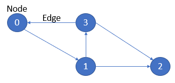

Crawl Link
Kali ini kita akan membahas mengenai Web Structure Mining, sama seperti sebelumnya kita akan melakukan crawl website hanya saja kali ini kita akan mengambil hyperlink yang ada pada setiap page dari website. Hyperlink yang kita dapatkan nantinya digunakan untuk mengetahui pagerank dan struktur link dari website. Semakin tinggi pagerank maka semakin kuat pengaruh situs/page tersebut terhadap page lainnya.
Struktur link yang dipatkan akan berbentuk graph berarah, yang terdiri dari node dan edge. Node merupakan situs/page dan Edge merupakan penghubung antar node yang melambangkan hubungan antara node itu sendiri.
Contoh struktur link :

Proses Crawl Link :
Website : https://www.dicoding.com/
import pandas as pd
import requests
from bs4 import BeautifulSoup
import networkx as nx
import matplotlib.pyplot as plt
(1) Mengambil link
pada html link biasanya ditampung di tag <a href='https://www.ex.com'> mylink</a> maka untuk mendapatkan seluruh link yang terdapat di website kita ambil semua isi 'href' pada tag <a>.
def GETlink(src):
try:
page = requests.get(src)
soup = BeautifulSoup(page.content, 'html.parser')
tags = soup.findAll("a")
links = []
for tag in tags:
try:
link = tag['href']
if not link in links and 'http' in link:
links.append(link)
except KeyError:
pass
return links
except:
return list()
(2) Filter link
link yang kita dapatkan perlu dilakukan filter untuk memastikan link tersebut merupakan link yang benar.
def filterURL(url):
#filter1
if "www." in url:
ind = url.index("www.")+4
url = "http://"+url[ind:]
#filter2
if url[-1] == "/":
url = url[:-1]
#filter3
parts = url.split("/")
url = ''
for i in range(3):
url += parts[i] + "/"
return url
- filter 1
digunakan untuk menambahkan "http://" pada link dengan index awal "www."
- filter 2
digunakan untuk mengecek "/" di akhir link atau link[-1]="/", maka ambil link dari index link[-1] sampai index awal link atau link=link[:-1].
- filter 3
digunakan untuk mengambil link utama, contoh :
"https://www.dicoding.com/academies/51" maka kita hanya perlu ambil "https://www.dicoding.com/".
(3) Crawl
dua proses sebelumnya kita satukan dalam fungsi crawl berikut :
def crawl(url, max_deep, show=False, deep=0, cek=[]):
global edgelist
deep += 1
url = filterURL(url)
if not url in cek:
links = GETlink(url)
cek.append(url)
if show:
if deep == 1:
print(url)
else:
print("|", end="")
for i in range(deep-1): print("-w", end="")
print("(%d)%s" %(len(links),url))
for link in links:
link = filterURL(link)
edge = (url,link)
if not edge in edgelist:
edgelist.append(edge)
if (deep != max_deep):
crawl(link, max_deep, show, deep, cek)
pada proses ini kita lakukan proses ambil link (GETlink(src)) dan filter link (filterURL(url)) dengan parameter url awal (url), maksimal kedalaman (max_deep), menampilkan proses crwal (show), kedalam awal (deep=0) dan list tempat menampung link yang sudah di ambil (cek=[]).
if not url in cek digunakan untuk mengecek apakah link tersebut sudah pernah dicrawl atau tidak, jika pernah maka link tidak perlu dimasukkan pada edgelist, jika belum maka masukkan link pada edgelist.
hasil dari proses crawl ini akan menghasilkan edgelist yang berisi link yang sudah difilter dan tanpa duplikasi link.
Memanggil fungsi crawl :
myurl = "https://www.dicoding.com/"
nodelist = [myurl]
edgelist = []
crawl(myurl, 3, show=True)
edgelistBox = pd.DataFrame(edgelist, None, ("From", "To"))